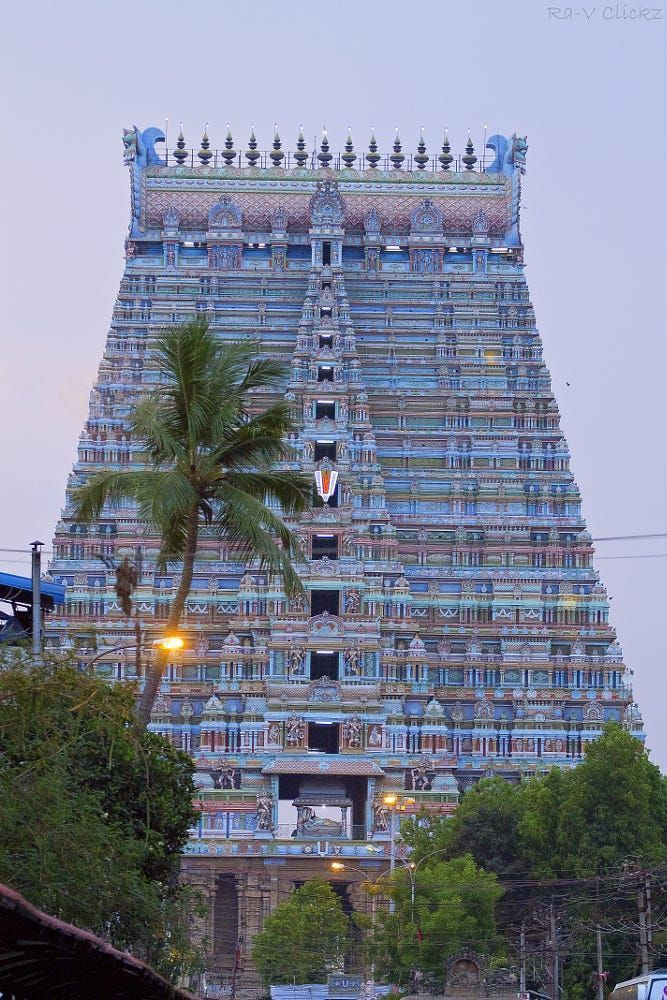
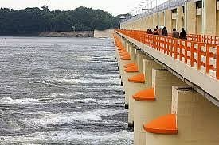
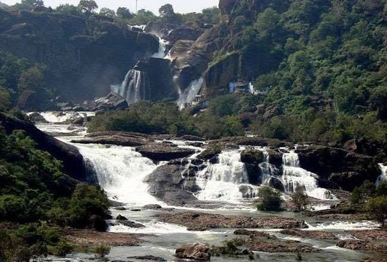

Top Tourist Sights
Venture through the ancient fortress structures, massive temples, cascading hills, and engineering wonders that make Trichy legendary.
Rockfort Ucchi Pillayar Temple
Built upon a monumental 83-meter high, 3.8 billion-year-old rock, this historic fortress complex houses ancient Pallava rock temples and offers panoramic city vistas.

SpiritualSri Ranganathaswamy Temple
The largest functioning temple complex in the world. An architectural marvel containing 21 tower gopurams spread across 156 acres on a river island.
Grand Anicut (Kallanai)
A masterpiece of ancient water engineering. Constructed by the legendary Chola King Karikala in the 2nd Century AD across the Cauvery River.
Samayapuram Mariamman Temple
A highly sacred shrine dedicated to Mariamman, the goddess of health. Thousands of devotees gather daily to witness the traditional ritual offerings.

NatureMukkombu (Upper Anicut)
A beautiful river delta park and historic dam split point where the Cauvery river branches into Kollidam. A highly popular spot for family weekend picnics.
 Nature Eco
Nature Eco
Tropical Butterfly Conservatory
Asia's largest butterfly conservatory containing lush greenhouse domes, interactive play lawns, and breeding centers hosting hundreds of rare butterfly species.

AdventurePuliyancholai Hills
A serene forest clearing at the foothills of the Kolli Hills, famous for its cascading streams of mineral-rich water and forest trekking pathways.